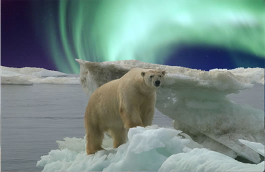

Nathan Gabriel Stewart

About Me
I am currently a student at Epicodus programming school, in the Intro to Programming class. Programming is very new to me, but I have very much enjoyed what I have learned and accomplished so far. I have chosen programming for a career change after a life of hard labor. I look forward to my future as a programmer and giving my body a much needed rest. Intro to Programming at Epicodus is the start of that future.
Here is some work that illustrates my first week of programming:
- Very basic stuff.
- You can see I have learned a trick or two.
- I am beginning to understand styling.
- My pages look much more polished after only four days.
Education
- Epicodus - Programming/Development - Current
- Portland State University - BS Psychology - 2008
Experience
- General Labor
- Concrete line-pump operator
- Cab Driver
- Bar/Nightclub Manager
- Data collection/Reforestation - Timber
- Deckhand - Commercial Crab - Alaska
Skills
- Basic HTML and CSS
- Landscape Design
- Concrete Finishing and Pumping
- I can drive anything, literally.
- Basic Computer System Building
- All Things Deckhand
Hobbies and Interests
- MMORPG Gaming - Primarily Everquest2.
- Gardening - My yard is beautiful, and I am the creator.
- Cycling - Moreso when I was younger but I have begun riding more lately.
- Fishing - I was addicted in the past but I rarely get out and fish anymore.